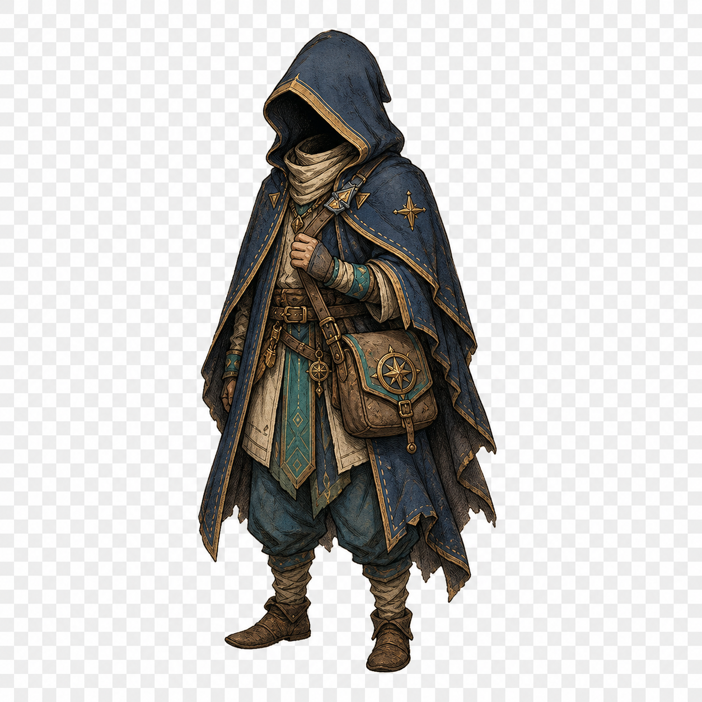
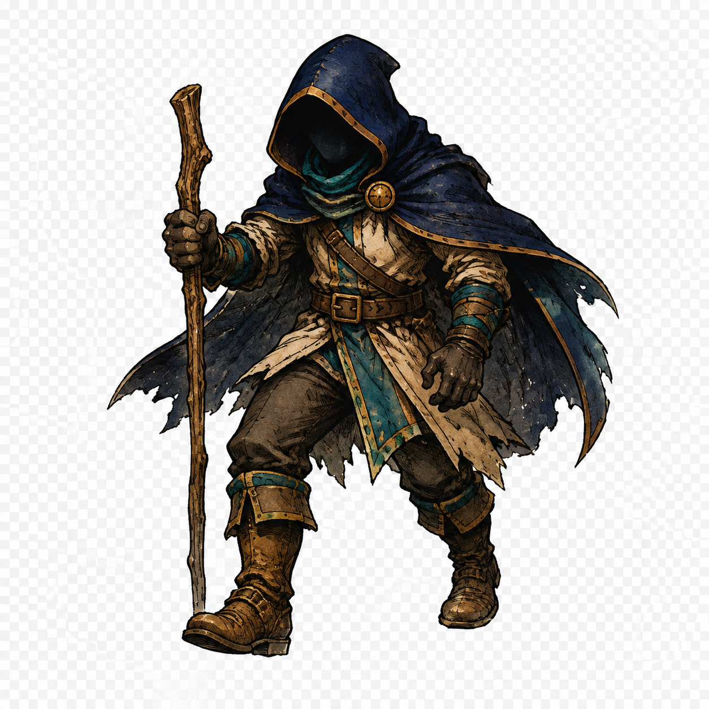
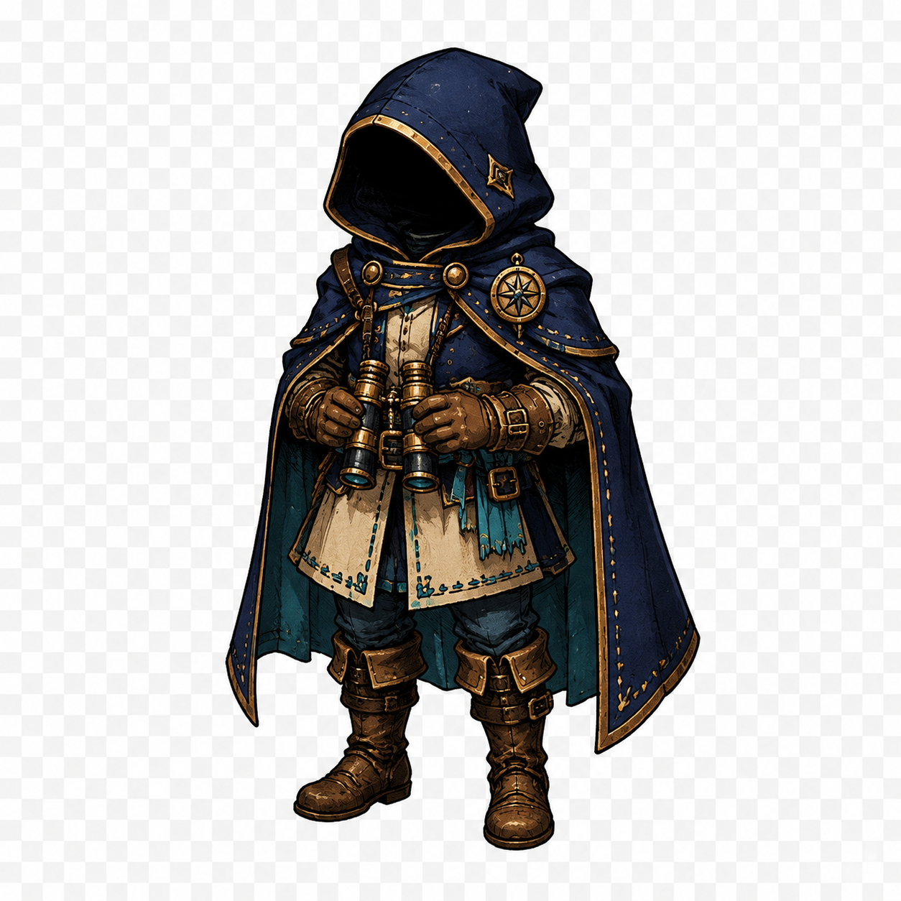
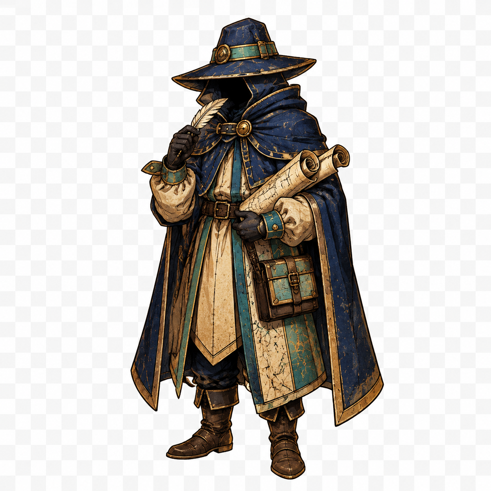
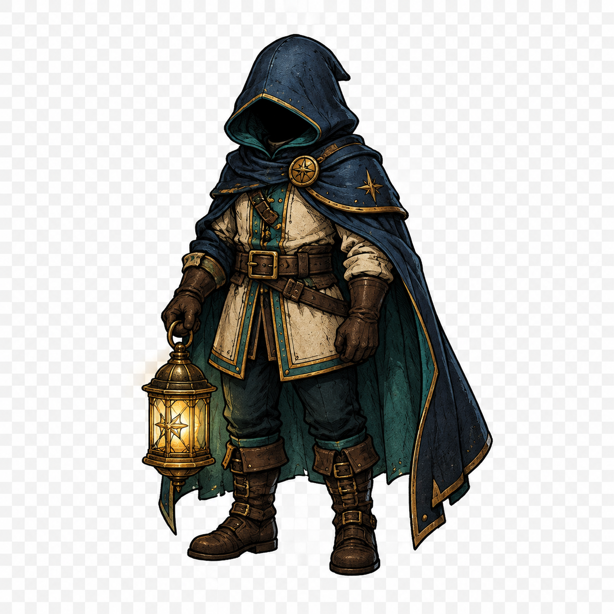
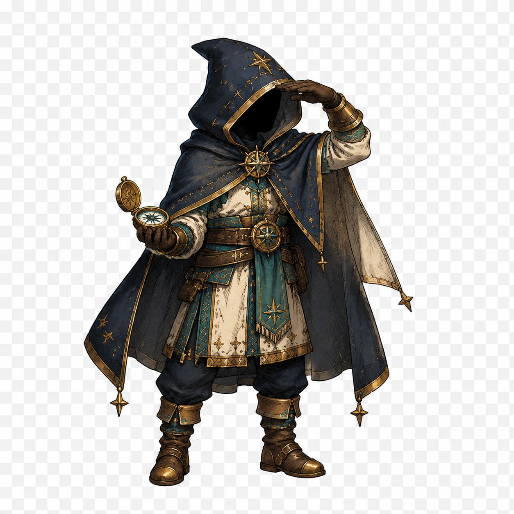

Worn traveling cloak · Small satchel

Walking stick · Rugged boots

Binoculars · Alert posture

Rolled map · Quill

Lantern · Calm and steady

Small compass · Outward gaze
Career Compass · Six hand-drawn adventure portraits.
Six 1254 × 1254 PNG illustrations. Background transparency correction pending.

Worn traveling cloak · Small satchel

Walking stick · Rugged boots

Binoculars · Alert posture

Rolled map · Quill

Lantern · Calm and steady

Small compass · Outward gaze